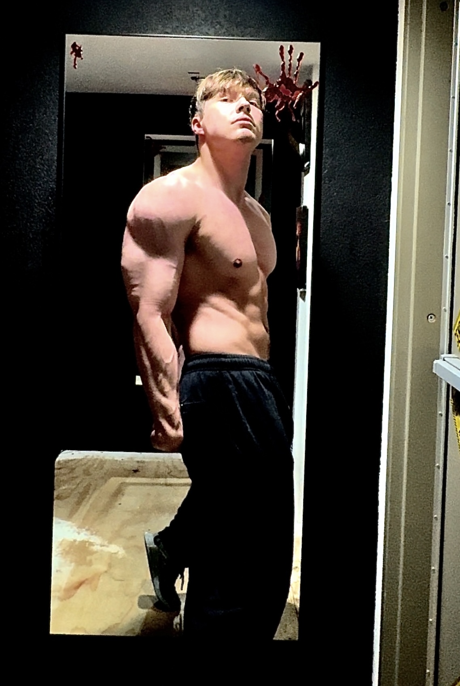

My Passions & Interests
Martial Arts

I discovered martial arts in preschool when a friend of mine said he wanted to join it. After preschool I went to kindergarten but didnt understand that not everyone went to one school, so when my firend wasnt there I wasnt very excited but tried it anyway and fell in love with the process.
Over a total of 16 years ive acquired 3 black belts, 2 in karate and 1 in Muay Thai kickboxing. Throughout the process ive met a large number of people who have been lifelong friends, Along with all of the incredible mentors you may have made it a very important experience during childhood that helped shape who I am today.
I think Martial arts has indirectly benefited me greatly because of all the life skills Ive picked up along the way. It helps in every aspect of life you can think of and has enabled me to be able to accomplished more than my peers during my adult life because of the independance I have.
Bodybuilding


I started bodybuilding at 16 after getting very sick, my friend introduced me to it, and I was very skinny and weak at the time so I thought it would be a good way to get stronger and gain weight, I started at 128 pounds and got all the way up to 224 pounds
Ive made major progress in and out of the gym because of its effects, Ive gained almost 100 pounds of muscle and have much more to go,it didnt come without challenges though. I injured my shoulder faily early on while bench pressing which took almost 9 months to recover from.
This hobby has become a very major part of my daily life and future aspirations. After completing a satasfactory career in finance I want to build a gym and run the gym after i retire from finance.